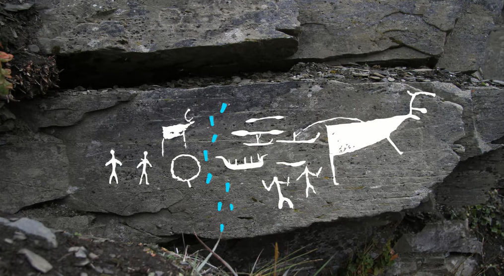
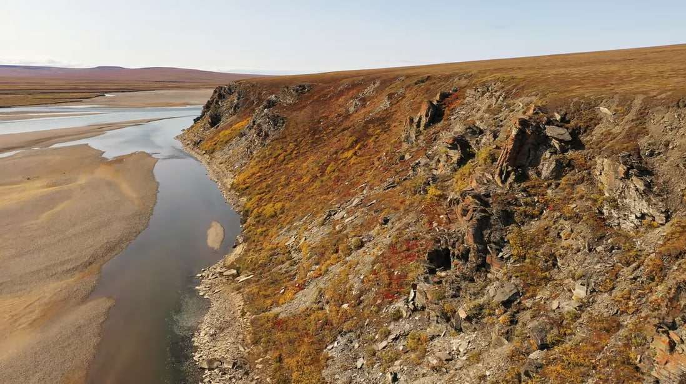
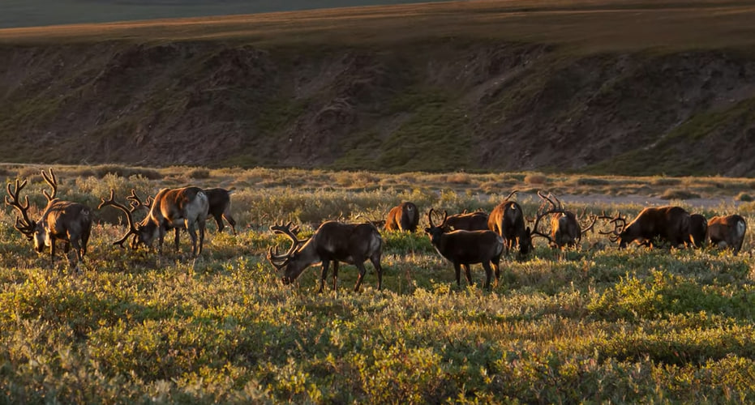
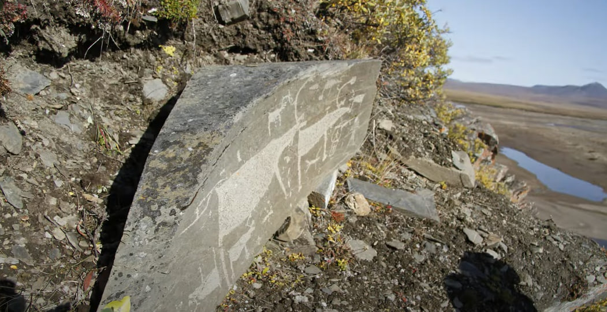

1965
1967-1968
1986
1999-2000
2005-2008
2021-2022
Петроглифы – это древние наскальные изображения. Обычно под петроглифами понимают наскальные рисунки со времен палеолита и почти до Средневековья. В основном это изображения людей, животных и бытовых сцен того времени (например, охота или пастбище). Петроглифы выбиваются или наносятся краской на каменной поверхности и распространены по всему миру. Крупные скопления петроглифов находятся в России, Кыргызстане, Франции, Испании и других странах.
Наш сайт посвящен самому северному и труднодоступному скоплению петроглифов в Евразии, который находится в долине реки Пегтымель недалеко от места впадения в Северный Ледовитый океан.
Петроглифы Пегтымеля встречаются на выступах скалы в диапазоне около одного километра в устье притока Кээнейкууль и ниже по течению Пегтымеля.
Они условно разделяются на 12 независимых скоплений (обозначаются римскими цифрами). Каждое скопление включает в себя определенное количество плоскостей с рисунками.
Для идентификации каждой плоскости используется следующий порядок записи: скопление-плоскость. Например, III-5 – где III – это номер скопления, а 5 – номер плоскости.
Петроглифы датируются концом II - началом I тысячелетия до н.э.
Помимо изображений людей, на скалах встречаются изображения многих видов животных. Главный герой пегтымельских петроглифов – северный олень. Но здесь есть не только олени. Среди изображенных животных можно уверенно распознать бурого и белого медведя, росомаху, снежного барана (чубук) и горного козла, волков, собак, лис и песцов, которых часто трудно (но возможно) отличить друг от друга. Эти животные, как правило, хорошо распознаются только в композиции: например, в сценах преследования оленей собаку можно отличить от волка по хвосту, закрученному вверх, а лису – по более коротким лапам и длинному пышному хвосту. Иногда можно узнать лося по отличиям от оленя пропорциями, рогами и характерной серьгой под горлом (хотя лось больше характерен для тундры). Однако совершенно не представлены мелкие животные тундры: пищуха, евражка и заяц. Близость к месту впадения в Восточно-Сибирское море обусловила также наличие изображений морских обитателей (тюлени, киты).
Люди, которые оставили свои рисунки на кээнейкуульских скалах, не просто изображали животных. Значительная часть петроглифов представляет собой сложные многофигурные композиции. Основные сюжеты таких композиций вполне естественно связаны с промыслом. Наиболее распространенная композиция – охота на плывущего оленя с каяка с помощью гарпуна. Олень при этом всегда изображен крупно, детально, реалистично и динамично. Охотник, напротив, невелик и схематичен: как правило, он изображается просто черточкой. Довольно редко изображение охотников детализированно. Также изображены сцены охоты с байдарки на китообразных и ластоногих с участием нескольких фигур людей, сцены охоты на медведя с собаками или без собак. Часть сюжетов сложных композиций не имеет отношения к промыслу, и люди в этих сюжетах либо отсутствуют вообще, либо показаны вне занятия охотой. Также часто встречаются сцены преследования оленей волками, движения стада оленей, охота на песца.
Главный герой пегтымельских петроглифов – северный олень. Оленей здесь более 700. При таком большом количестве вполне естественно наблюдаются различия в способах изображения оленей как сюжетных, так и стилистических:
Больше от этом в разделе "Визуализация"
Одни олени просто лежат или стоят, другие – плывут, третьи – бегут. Основные характерные отличия оленей: техника и стиль изображения, контур тела, рога, ноги и копыта.
Олени могут быть зимними и летними. Это можно определить по рогам и по способу начертания копыт. У зимнего оленя зачастую тщательно изображаются четыре растопыренных пальца ног. Олень может быть изображен и живым, и мертвым. Мертвый олень обычно показан просто перевернутым вверх ногами. Часто олень показан как объект охоты и чаще всего это охота на плывущего оленя с каяка.
Олени встречаются как с рогами, так и без рогов. Рога оленей могут указывать на пол представителя, время года, они бывают:
Реже изображаются уши у оленей. В основном уши имеются у более сложных, детальных изображений оленей. Хвосты не всегда четко прорисовываются или почти сливаются с крупом.
Иногда на теле оленей нарисован круг, возможно, изображающий солнце.
Наличие большого количества признаков и их различие – то, что сразу цепляет глаз. Анализ целого ряда сюжетных признаков, по которым можно группировать и анализировать оленей, открывает глаза на отношения человека и оленя того времени, позволяет отделить оленя от других парнокопытных, в то время как метод изображения и стиль позволяет выдвинуть возможные предположения о датировках, а также культурных связях народов Севера. Именно поэтому наше исследование сфокусировано непосредственно на оленях.
При создании петроглифов в долине Пегтымеля использовались три метода:
Основные инструменты, использовавшиеся для нанесения рисунков — каменные и металлические орудия. В результате проведенных Е. Ю. Гирей экспериментально-трасологических исследований было предварительно установлено, что подавляющее большинство петроглифов Пегтымеля выполнено металлическими инструментами (по всей видимости, латунных).
В экспедициях использовались фотофиксация и контактное копирование с поверхностей с использованием микалентной бумаги (реже использовались силиконовые копии). Микалентная бумага позволяет точно передать мельчайшие детали, контуры, линии гравировок, глубину поверхности (даже если изображение практически сливается со скальной поверхностью) с помощью нанесенной поверх нее краски. Чтобы краска не попала на петроглифы, использовался двойной слой микалентной бумаги. В качестве краски использовали стойкие маркеры разного цвета и толщины.
Обработка полевых прорисовок в дальнейшем проводилась в камеральных условиях и заключалась в следующем: сверка копий с фотографиями и корректировка в случае необходимости; сканирование; склейка сканированных фрагментов и компьютерная обработка полученного цифрового изображения в графических редакторах.
Изображения на странице взяты из фильма о Пегтымельском памятнике
История открытия пегтымельских петроглифов неразрывно связано с историей исследования Чаун-Чукотки (северный район Чукотки), начиная с 1930-х годов. Тогда месторождений полезных ископаемых обнаружено не было, поэтому картографирование территорий началось лишь в 1950-х гг. В 1965 году в долине реки Пегтымель (в устье ручья Кээнейкууль) внимание геолога Николая Саморукова привлекли белые кварцевые жилы на коричневатой скале. Подобравшись поближе в поисках залежей золота (которого там так и не нашлось), он увидел выбитые на скалах древние рисунки и позднее написал о своей находке в Магаданскую лабораторию археологии, истории и этнографии АН СССР. Письмом заинтересовался археолог Николай Диков.
В 1967-1968 годах петроглифы на реке Пегтымель впервые изучила археологическая экспедиция под руководством Николая Дикова, который описал 103 композиции в 11 скоплениях на скальных выступах. Однако, как это часто бывает на крупных местонахождениях, при первичном обследовании были выявлены далеко не все изображения.
Следующая экспедиция под руководством Николая Дикова открыла новые изображения.
В результате работы экспедиции Эрмитажа и Института истории материальной культуры РАН были открыты новые плоскости в пределах уже известных скоплений, а также было открыто XII скопление. Общее количество плоскостей увеличилось почти в 1,5 раза.
В 2005–2008 годах экспедиция ИА РАН под руководством Екатерины Дэвлет исследовала памятник. Археологи отчистили поверхности с петроглифами от мха и лишайников, провели трасологические исследования и создали факсимильные копии поверхностей с рисунками. Тщательное обследование всех скальных выходов, даже тех, на которых, на первый взгляд, не было петроглифов, очистка поверхностей и изучение труднодоступных участков позволило найти новые изображения. Количество известных плоскостей с петроглифами превысило 340.
В 2021 году Петроглифический отряд Института археологии РАН под руководством Елены Левановой прибыл на памятник. Основными задачами ученых были мониторинг состояния сохранности памятника и его документирование на новом методологическом уровне с использованием фотограмметрии и спутниковой геодезии. Кроме сотрудников ИА РАН, в отряд вошли участники экспедиций на Пегтымель 2000-х годов, специалисты Лаборатории RSSDA и волонтеры Комитета по охране объектов культурного наследия Чукотского автономного округа. Еще предыдущие исследования показали, что постоянные перепады температуры, вода, которая замерзает и оттаивает в трещинах скал, постепенно разрушают скалы с петроглифами. В итоге некоторые камни сползают вниз по скале, обрушиваются, а воды реки Пегтымель заиливают и скрывают камни с изображениями. Также новое обследование добавило к списку природных факторов и антропогенное воздействие: на скалах появились новые вандальные надписи.